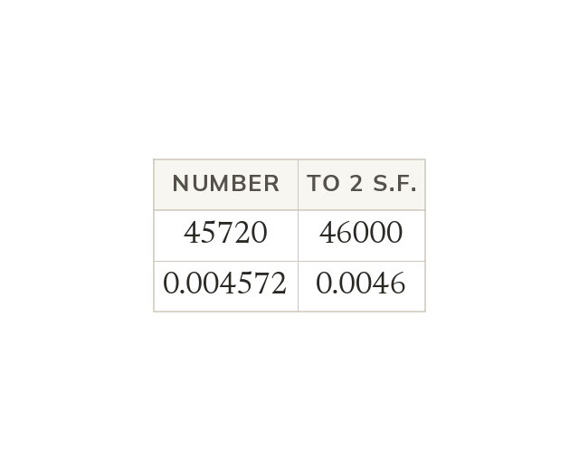
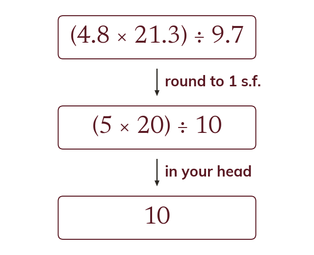

Which digits count
Significant figures are counted from the first non-zero digit. Zeros in front never count, and zeros between other digits always do.
A calculator gives ten digits, but a sensible answer rarely needs more than three. Today is about keeping the digits that matter, and using them to check an answer is the right size.
Work down the page at your own pace. Write every answer in your book first, then click to check it.
Read each card, then follow the worked examples one step at a time.
Significant figures are counted from the first non-zero digit. Zeros in front never count, and zeros between other digits always do.

Rounding to significant figures keeps the number the same size. Places dropped before the decimal point are filled with zeros.
Pick an answer. If it's wrong, the feedback tells you which mistake it was.
Read each card, then follow the worked examples one step at a time.

An estimate rounds every value to 1 significant figure before calculating. The calculation is then simple enough to do in your head.

An estimate uses ≈, not =. It checks that a calculator answer is the right size.
Pick an answer. If it's wrong, the feedback tells you which mistake it was.
Finished? Next lesson: 9.9.2 Estimating Complex Calculations.
Log in, then search for a code to practise that skill.
Videos, worksheets and more on each part of this lesson.